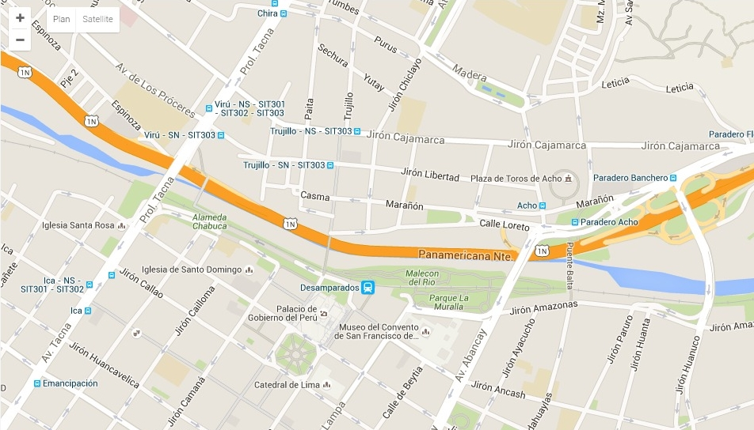
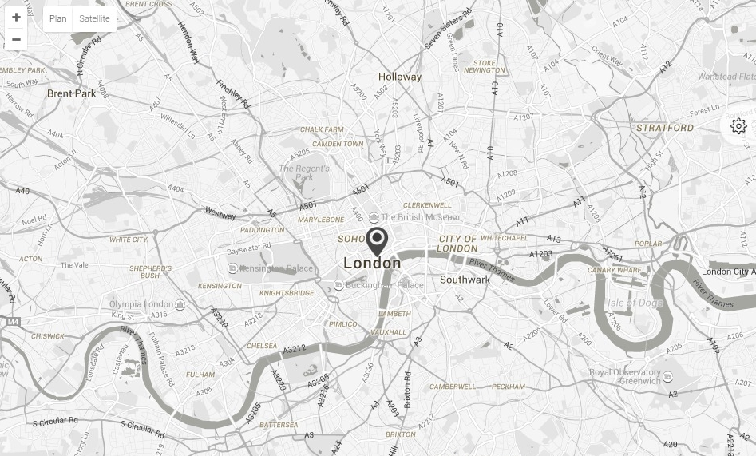
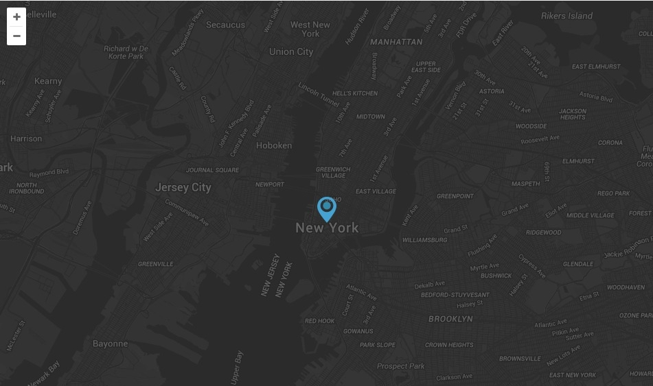
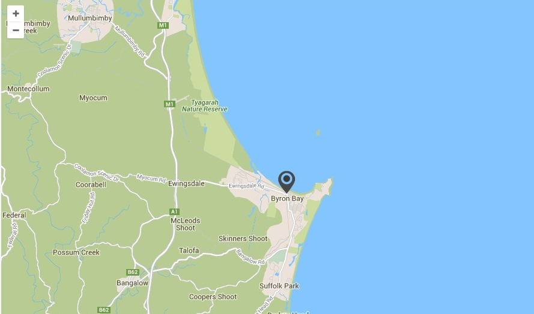
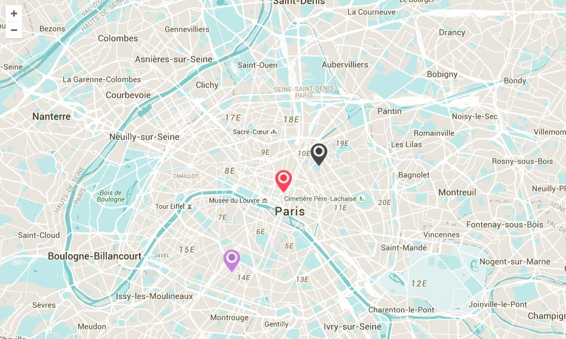

Customize your map with various style and layouts.
To add a map on your page, you have to create an element with a map class.
<div class="map" id="my-map"></div>
Maps come with 5 styles. But it's easy to add new one. We will explain that after. Map style are managed via data-map-style attribute.
Default style (no attribute needed):

<div class="map" id="my-map"></div>
Black & white style:

<div class="map" id="my-map" data-map-style="black-white"></div>
Dark style:

<div class="map" id="my-map" data-map-style="dark"></div>
Blue style:

<div class="map" id="my-map" data-map-style="blue"></div>
Turquoise style:

<div class="map" id="my-map" data-map-style="turquoise"></div>
Of course, we have to add some settings, at least map position. Here is an example of how to add settings:
<div class="map" id="my-map" data-plugin-options='{"zoom":14,"lat":51.5085300,"lng":-0.1257400,"panControl":false,"mapTypeControl":false}'></div>
Here is the list of all setting available:
Latitude (number):
<div class="map" id="my-map" data-plugin-options='{"lat":51.5085300}'></div>
Longitude (number):
<div class="map" id="my-map" data-plugin-options='{lng"}'></div>
Zoom (number):
<div class="map" id="my-map" data-plugin-options='{"zoom":14}'></div>
Pan control (boolean):
<div class="map" id="my-map" data-plugin-options='{"panControl":false}'></div>
Map type control (boolean):
<div class="map" id="my-map" data-plugin-options='{"mapTypeControl":false}'></div>
Street view control (boolean):
<div class="map" id="my-map" data-plugin-options='{streetViewControl":true}'></div>
To create inline map, just add f-left or f-right class to your map. Map will float on left on right side of the text / element.
<div class="map f-left" id="my-map"</div> <div class="map f-right" id="my-map-2"</div>
You can specify height of your map with data-map-height attribute:
<div class="map" id="my-map" data-map-height="400"></div>